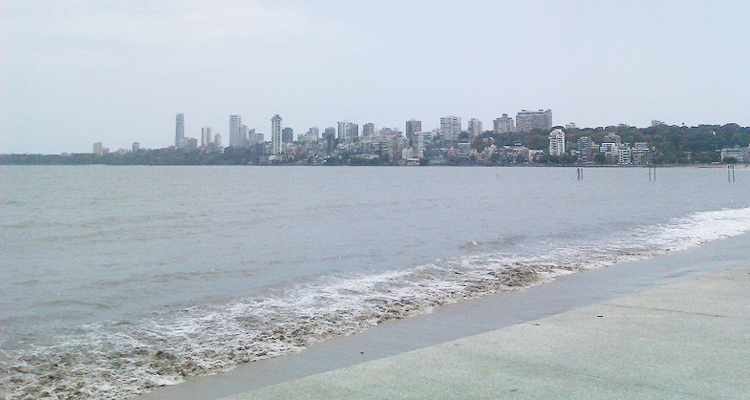
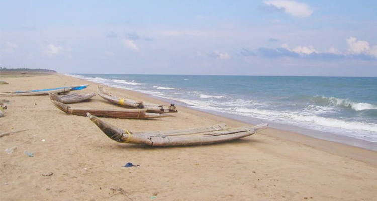

Juhu Beach in Mumbai is among the famous beaches of India. It faces the Arabian Sea, and it’s the longest beach in Mumbai. The place is known for its street food stalls, the soothing views of the sunset and also, for encounters with celebrities. The beach is a favourite among the film-makers and you can find photo sessions and video shoots going on now and then. And if you visit Juhu Beach early in the morning, you might catch up with the celebrities while they’re jogging or having coconut water there. Juhu Beach is in a posh area and many actors and actresses stay in the locality. People visit this place to relax, enjoy the day with their loved ones. And while you’re there, don’t forget to check the local snacks of Mumbai.
The beach is open for you 24 hours a day. You can go to the place for some early morning running, watch the waves in the noon or enjoy some time alone at Juhu Beach Mumbai at night. However, Juhu Beach gets into its character in the evening when people flock in groups to relax after work or enjoy delicious snacks of the city.

